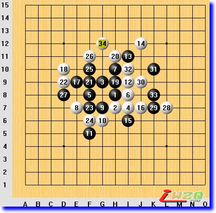

图说棋理(无禁手实战解析)
#1 图说棋理(无禁手实战解析) 作者：有志青年 发表时间：2008-9-13 21:45:39
无禁手实战解析（一）顽强的精神

无禁规则，中央丘月开局，黑必胜局。
白4 i7强防。以下着法黑方较强，攻击力十足。
黑15 i6后，白方面临崩溃。
但是作为棋手，就应该像斗士一样，任何时候斗志不能被击垮！白16 j7！
黑17 e9 活三，白18 d10 防。
这时候黑方看到17-3的活二被牵制，19 h9意图在于进攻的同时削弱一下对方。
长考后，白20 h7 防住了黑棋 vcf 路线上众多防点中较弱的一个。上帝赐予每颗棋子的防守力、进攻力、拓展力的总和是相等的，此弱彼强！
黑方丝毫没有意识到自己步步走向了危险的边缘......
黑27，行程的终点站，白棋在顽强精神的支撑下最终爆发！
本局要说明的是：胜势不骄，败势不馁！
#2 无禁手实战解析（二）险象环生 作者：有志青年 发表时间：2008-9-13 21:46:51
本局无禁手规则，中央名月开局。
白4弱防。
棋行至黑19，黑棋左方示手带右方vct，一次惊险，白棋牺牲眠三躲过；
棋行至黑43跳三做杀，惊险！白棋采取防守一头给对方留眠三得不得已着法躲过；
棋行至黑47示招、含招同时形成，惊险！白棋采用一子双防躲过。
黑棋无力再组织进攻，白66尝试进攻无果，行棋84手，双方握手言和。
#3 无禁手实战解析（三）兵不血刃 作者：有志青年 发表时间：2008-9-13 21:47:48
本局无禁手规则，边角开局。
黑5拓展力极强，很容易诱使白棋贴身近防而丧失外势。
白6、白8、白10以外势为重，特别是白10，看似没有防住局部要点。黑11活三急攻，用掉一个活二，同时形成一个活二和一个眠三，白棋防守中形成一个活二，相比之下，是黑棋只多出一个眠三，白棋多出一个活二，白棋较便宜。全局来看，黑方还是比白方多出一个活二的。
黑13、15转变战略，开始抢外势，至白22，黑棋计划执行效果不佳，黑23有防守之意，白24做杀保持对黑棋的高压态势，黑25从里面断对方眠三同时形成眠三，抵抗较为生硬和勉强，应考虑e13。白26先手破坏黑方棋形，然后28手从容发展外势。
黑29没有彻底打消进攻的念头而全力争抢外势，还想利用残余势力连打带销破坏白棋上方的势力，至黑35落得个局部后手，白36得到的非常从容，势力方向一下子转到了更为广阔的右方,这样，白棋争抢外势的计划执行得较为完美，一举取得较大优势。
本局棋黑方的教训是：1、杂念太重，攻防不明。攻防兼备的的思想是没有错的，但是这里面的“攻”必须是有效的攻，万万不可成为无效并且落后手的“攻”。2、局部交换的价值衡量不准。11手、12手，为黑棋主动交换，与26手、27手白棋主动交换的价值相比，明显低得多。当然，11、12交换当时并没有显出什么，下到白16就会发现，那个交换提高了白16的价值。
#4 无禁手实战解析（四）多算一步棋 作者：有志青年 发表时间：2008-9-13 21:48:39
在生活中有个短语叫“全X一盘棋”（全国一盘棋，全省一盘棋。。。），什么意思呢？就是说分析问题要通盘考虑。那什么是“通盘”呢？就是整个棋盘。我们在下棋的时候，要考虑整个棋盘上的所有棋子，不要轻易认为某些棋子已经“废掉”了，毫无用处了。有棋局为例。
本局无禁手规则，边角开局。
序盘棋按八卦阵行至白10，黑11开始进攻，活二，白12以阵型挡二，黑13做眠三，弱棋，白14做三个活二，黑15冲四后17防守。白18至黑21，白棋试探性进攻无果，白22转入防守。
黑23、23试图重新发起进攻，白26跳活三防守，黑从外面挡，给白棋留下了一个眠三。这个眠三此时看来对黑棋没有什么威胁，白棋也不急于冲掉。
现在分析黑棋的两个活二，只要防住一个活二，就不怕黑棋的进攻。白28防i7！把左上方交给黑棋了，倒要看看黑棋有什么手段，呵呵！
黑29防白棋的活二同时形成眠三。这步棋除了有防守作用外，与黑13有同样的弊病，就是把活二下成眠三，认为这是在进攻，其实不然，我认为这是“停步不前”（在对方一个活二也没有的情况下向空旷的方向延伸眠三除外）。白30做双二，黑方只意识到30-24的活二在右面的威胁，没有意识到30-12的活二有什么威胁，31继续在上面防守做势。白32又一次“一子三活二”，黑33虽然防守了32-22的大跳二，但对于30-24来讲是重复防守，效率打了折扣。白34手筋（一般来讲防守冲四活三的时候，一颗子既防眠三又防活二，效率最高，但现在黑棋做不到），黑35防守，白棋36、38连续进攻，但就这个局部来讲无杀，黑39防守。
白40冲四，黑棋这才如梦方醒。。。感叹道：原来你都是算好的！的确，那个眠三一直在白方的计划之中。这正是：无敌的诀窍就是永远比别人多算一步棋！让我们共同努力吧！
#5 无禁手实战解析（五）暗藏杀机 作者：有志青年 发表时间：2008-9-13 21:49:24
无禁手规则，中央蒲月开局。
棋行至黑65后，盘面上看双方都难以取胜，有和棋的趋势。
白66、68两手棋防守了黑棋的两个眠三，表面上看是分割棋盘准备和棋了，实则暗藏杀机。黑69误认为白棋已经没有作为了，自顾自做棋VCT，白棋发动了最后的总攻，至84手，白棋取胜。
这盘棋反映出计算力的重要性，在对方有VCT的情况下自己是不能去做VCT的，这道理想必大家都明白，问题是能否及时发现双方可能出现的VCT。
告诫初学者：VCF、VCT的计算能力是下五子棋的基本功。
变化参考图
#6 无禁手实战解析（六）熟练运用含招的一局棋 作者：有志青年 发表时间：2008-9-13 21:50:38
开局黑棋强劲，黑5好点，不出意外的话，黑棋能胜下来了，但黑11之后，看似还有几步连续进攻，但几步棋后就没有连续手段了（黑11应该在12位活连三）。黑棋连续进攻到15手，白棋随势而防。
黑17做眠三，白18组八卦型。黑19做双二，这时候，白棋按八卦型应下E5，但考虑到黑这个19以后，产生了D7“引、含成双”的杀点，所以防守E6，这就是八卦阵的灵活运用，不能死搬教条。
黑21眠三同时带活二进攻，白22防守，黑23做眠三，白24防守，黑25再做眠三同时带活二进攻，这时候白棋26防L4是八卦阵型，但考虑到再用八卦就会防守有余而进攻不足，把黑棋防得太死了就会逼着黑棋做，那样后势不可预测。所以白棋没用八卦防守，在L5防二同时自己成二。
黑27挡二同时做棋，白28防黑棋一个眠三同时成活二，更主要的是截断了黑棋上下联系的路线。
黑29进攻，白30防守同时示招，黑方为了保持先手没有在F6彻底防守，而是31冲四后33活三，白棋防守，这样黑棋依然保持先手。黑35冲四断白棋大跳二后37当白棋眠三，同时向外做势，这几步黑棋黑棋效率较高。
但恰恰是黑棋为了保持先手，给白棋左面留下了机会，被白棋敏锐地捕捉到了。请看：
白38含招，级别很高的进攻！黑39防守，白40依然是含招！不给黑棋喘息的机会，黑41防守，白42档黑棋眠三同时，仍然是含招！黑43防守，白44断黑棋活二的同时，“示、含成双”，黑棋回天无力了！
这盘棋白方取胜的一个因素是黑11出错，但更重要的因素是八卦阵的灵活运用和含招的熟练运用。
#7 无禁手实战解析（七）先手的争夺 作者：有志青年 发表时间：2008-9-13 21:54:44
本局无禁手规则，中央蒲月开局。
白4挡二活二，黑5做双二，白6再次挡二活二，这时候白棋两个活二，黑棋一个活二，但持有先手。黑7活三带二，但这个活二受白棋的一些牵制。白8挡三做眠三。黑9一子三通，棋形很好，但进攻级别较低，级别低的进攻并不是不好，在无杀情况下频繁使用高级别进攻才不好，那会造成子力的浪费，但现在白棋活二、眠三资源也很丰富，黑9时机不好。
白10F9活三，目的是在G8冲四后的交换中不落后手，而且现在活三黑棋E9防守的可能性小一些，黑棋下I9对白棋来讲也能提高I6的子力效率。至白14I6的三乘手，是白棋的既定计划。黑15J5就完全可以，但实战先下K5冲四，虽无碍大局，却反映出黑方下棋不够细腻。白18示招，黑19I8防中带攻，是一个含招，双方对先手的争夺很激烈。白20活三防守，黑21仍然是含招，白22冲四防守，白棋这两步把黑棋送给的一点资源全部用掉了，这也是不得已的办法，凭什么黑棋就白白送给对方活二和眠三呢？所以说这也很公平。（本图）
黑23挡冲四。这时候白棋有机会进攻了。这时候D7是个好点，白32手冲四活三（参考变化图）。但实战就是实战，不可能步步完美。白棋不愿意让黑棋在I10冲四,于是向上活三了。黑25、27两手棋想先利用先手处理上面，然后再防守右面。白棋将计就计上面发动了总攻。白30活三，黑31挡，白32双示招，但G11是个共用点，黑33G11唯一防守。白34冲四后，36防守同时形成一个活二和两个眠三，是个“后中先”（中间过程图）。
黑37I12活三，白冲四挡三后E7活三，紧接着E5示招含招同时形成，黑败定（实战变化图1）。
黑方悔棋改下37E8，白棋在上面直接VCF！（实战变化图2）
本局棋黑以为开局占优，强攻就能拿下，刚性有余，韧性不足，结果未能如愿，教训啊！
参考变化图
中间过程图
实战变化图1
实战变化图2
另一盘棋。
黑15看似很强，但不是先手，使不得！黑15只是做vct，而白棋的vct一经做好了，一旦该白棋下棋就开始实施vct了，所以黑15不行的
#8 无禁手实战解析（八）星火燎原 作者：有志青年 发表时间：2008-9-13 21:58:02
为了让初学者看得明白，我尽量分析细致些。
本局选自QQ游戏无禁手房间，采用不带交换的民间规则。
黑1，落天元，最强；白2，紧贴防守，最强（斜向紧贴防守也是最强）。
黑3，不如G7或I7强，但也足以取胜。白4，较强防点。
黑5，挡二活二，最强；白6，同样挡二活二，最强。
黑7，挡二活二，较强，也可以考虑G10；白8，占领黑棋的联系点。
黑9，一子三通（一颗子同时形成三个活二），连二、跳二、大跳二各有一个；白10看着着急也没用，唯一能做的还是挡二活二。这几步棋白棋很苦。
黑11，试图进攻；白12防守后产生J9的双三点。
黑13，占据白棋的双三点；白14在黑棋眠三附近防守黑棋活二。
黑15，活三带眠三；白16防守带眠三。
黑17、19、21急攻三手，白22防守后，局面趋于平衡，黑棋优势不再。
黑23，挡白棋活二，同时计划与19、21、17的眠三相接应；白24防守黑棋眠三同时形成一个活二和一个眠三。
黑25，担心白棋形成连续进攻，挡白棋活二，计划在左上角强攻。白26冲四后28D11，防住黑25向上的线路后紧接着断掉黑23-37、7-21的线路。
此时白棋在左上角有微弱优势，黑棋已经没有希望在那里进攻了，黑棋应该考虑放弃，把左上角划为防守区域，而另谋进攻区域。
实战黑29想把白棋的微弱优势也防掉，同时活二带攻，白30后白棋优势扩大，使得黑棋脱不开手了，如果黑棋脱先，白棋在上方能够取胜。
黑31只好单防。白棋得到先手，经过审局，也没有发现什么连续进攻的手段，就在空旷地带K5战略性做棋。这手棋计划与L6或者I4联系，像原野上的一点星火，蕴含着无限希望。
由于白棋很飘，黑棋的防守也就比较迷茫，黑33挡白棋一个面二，同时产生L7点的做“双眠三”好点，但是黑33在竖线上已经不能形成活三，白棋也没什么担心的，白34继续做棋，眠三带大跳二。
实战黑35G6。可以考虑I4点。
白36活三，黑37防守，白38眠三带活二，黑39防守同时形成活二。
这时候盘面上白棋虽然有一个活二和一个眠三，但一时也找不到很好的联系点。
白40继续在空旷区域F4做棋，伺机寻求连接；黑41E7挡白棋的眠三，同时想把36-39这个活二同左面相联系。
白42挡黑棋活二同时形成眠三，黑43挡白棋眠三。
由于白42挡住黑棋的35-39的活二后，白棋I3活三后再I4活三，黑棋不能反三了，所以白棋总攻的机会到来了。白44至64是个VCT杀，虽然黑棋中途有55、57两手冲四，但对战斗没有影响。
这盘棋白棋不失时机地在空旷地带做棋的思想值得学习。
#9 无禁手实战解析（九）我被骗了！ 作者：有志青年 发表时间：2008-9-13 22:00:02
本局我执白。
黑1下天元，白2直指防守，黑3开出妖刀，白4活二，黑5挡二拓展，白6活二占据黑双二点，黑7一子三通，白8防守，黑9活三断白棋眠三，白10挡三活二，黑11挡二活二，白12挡黑棋大跳二并活二同时切断黑棋右上和左下的联系。黑13活三，白14防守，黑17一子三通，白18j4防守的比较主动。黑19做VCF！
黑棋形状很好，白棋陷入沉思，绞尽脑汁想找出一个最稳妥的防点，最后下了G5，黑21再做VCF，白22防守后，黑23示引成双，胜定。
为什么说白棋被骗了呢？经过复盘，黑19之后，白棋唯一的手段是进攻，不是盲目进攻，而是在防守的同时做第一级别的进攻，那样才能避免黑棋的连续做棋。白20下G3是防守的同时出含招，但是黑21如果下K3，之后白棋还是要陷入苦防。白棋改变一下次序，先于K3冲四，然后再G3示招，黑棋将无法防守。
这个黑19是典型的骗招。所谓骗招必须符合两个条件，第一，骗招本身是败招；第二，对方按正常思维很容易落入圈套而失败。本局的黑19，如果白棋方思路局限于寻找一个防点想制止黑方的各种后续手段而想不到攻防兼备的妙手，那就难免落入圈套，而白棋寻找到正确的解法的话，这个19会使黑棋陷入必败局面。所以说这个19是骗招。
#10 无禁手实战解析（十）拆解计算过程 作者：有志青年 发表时间：2008-9-13 22:03:12
这是一盘实战对局，现在该白棋走，白棋首先应该想什么呢？
1、该自己走了，能不能下一手成五连？
2、不能成五连。那么如果自己冲四或试图实施VCF，对方能不能一步成五连？
3、对方不能。自己有VCF没有？
4、没有。自己能不能做VCF或者实施VCT？也就是说自己做VCF或实施VCT的话，对方会不会实施VCF？
5、对方下一步没有VCF。自己有没有VCT？
6、自己没有VCT。那么向哪里做VCF呢？
做杀的点很多，逐个计算哪些做棋对方能防住，这时候需要VCF和VCT的计算力了。
可以做最深的含招，那就是J6，黑棋无法防守（参考图1）。也可能想不到最深的含招，可以考虑J7，这是浅了一步的含招，有L7、L9和L7、J6、K7两路VCF，但共用10-30-42这一个眠三，所以黑棋下L7是唯一防守（参考图2）。当你发现对方的唯一防守是自己的冲四点的时候，可以提前冲四，只要对方防冲四的点不是四乘手，自己就能取胜了（参考图3）
参考图1 白46j6取胜图
参考图2 白46j7黑棋防守图
参考图3 白46先冲四再做棋取胜图
#11 无禁手实战解析（十一）分隔阻断 作者：有志青年 发表时间：2008-9-13 22:03:57
开局为中央寒星，白4、黑5为要点，白6为较强防守，如果下I7，则演变为燕阵——黑胜阵法。
黑7活三成二，进攻；白8挡在黑方较强的一头。
黑9向下跳三，是没有连续手段的进攻，不愿意在中间活三让白棋成双二，其实在中间活三强，白棋防守成双二后，黑棋可以继续向右活三进攻。
白10防守，与4、6、8三颗子形成八卦阵。
黑11挡二活二，白棋如果按八卦阵走下去，应该下H5，但考虑到那样就闪出了黑7、5、1那个眠三冲四涉及的斜线，故此下H6。
黑13成双二。11-13的活二较活跃，是白棋的防守对象，考虑到9-13的活二和黑棋左下方眠二较多，所以在左下方防守。
黑15做棋，白16考虑到黑棋并没有做出V（VCF或VCT），于是采用分割阻断，D8切断黑棋左下方与黑7的联系。
黑17阻止白棋一子三活二的好点，由于白14、10已经使得黑17的两条斜线空间不足，故此白18做宽松的防守。
黑19冲四，意义不大，白防守。
黑21活三。因为左面局势白棋已基本控制，所以在下端防守，防止黑棋两个眠三开口在同一方向而协同作战。
黑23示招同时成二。这个活二威胁较小，白棋老老实实防守E8，静观其变。
黑25在已有眠三的局部再作眠三。白棋依然采用分割阻断的手段，26J7阻断黑棋与21的联系。
黑27-37，双方互相纠缠，白棋较为满意。在某一方有优势的情况下，纠缠的步数越多，劣势的一方越满意。
白38防守黑棋29-31的活二，同时形成两个眠三，加强己方攻势。
黑39随手，没有发现白棋的VCT，以失败告终。
这盘棋白方采取的战略思想就是：对方强攻，己方就以纠缠奉陪；对方做棋，己方就采取分割阻断的手段切断对方子力的联系，最终逐步缩小了黑棋的优势。